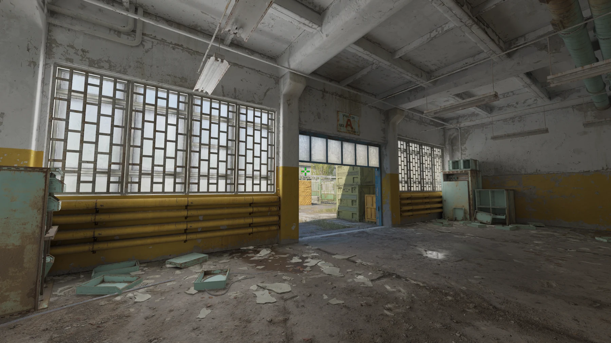
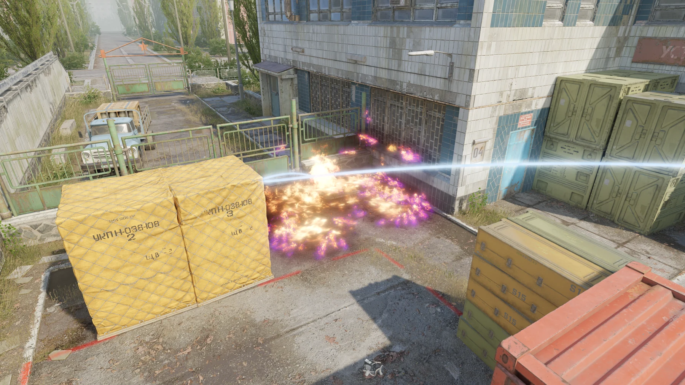

Cache
Обери гранату, щоб переглянути розкидки для цієї карти.Choose a grenade to browse lineups for this map.Elige una granada para ver los lanzamientos de este mapa.选择手雷查看此地图的投掷点位。इस मैप की लाइनअप देखने के लिए ग्रेनेड चुनें।Choisissez une grenade pour consulter les line-ups de cette carte.Escolha uma granada para ver os lineups deste mapa.اختر قنبلة لعرض تشكيلات هذه الخريطة.এই মানচিত্রের লাইনআপ দেখতে গ্রেনেড বেছে নিন।Pilih granat untuk melihat lineup peta ini.
Обери гранатуChoose a grenadeElige una granada选择手雷ग्रेनेड चुनेंChoisir une grenadeEscolha uma granadaاختر قنبلةগ্রেনেড বেছে নিনPilih granat
Натисни тип гранати, щоб побачити розкидки цієї карти. Натисни назву розкидки, щоб відкрити кроки та скриншоти.Choose a grenade to see lineups for this map. Select a lineup to view its steps and screenshots.Elige una granada para ver los lanzamientos de este mapa. Selecciona uno para ver los pasos y capturas.选择手雷类型查看此地图的投掷点位。点击名称查看步骤和截图。इस मैप की लाइनअप देखने के लिए ग्रेनेड चुनें। चरण और स्क्रीनशॉट देखने के लिए नाम चुनें।Choisissez une grenade pour voir les line-ups de cette carte. Sélectionnez un nom pour consulter les étapes et captures.Escolha uma granada para ver os lineups deste mapa. Selecione um nome para ver etapas e capturas.اختر نوع القنبلة لعرض التشكيلات على هذه الخريطة. اختر الاسم لعرض الخطوات ولقطات الشاشة.এই মানচিত্রের লাইনআপ দেখতে গ্রেনেড বেছে নিন। ধাপ ও স্ক্রিনশট দেখতে নাম নির্বাচন করুন।Pilih granat untuk melihat lineup peta ini. Pilih nama untuk melihat langkah dan tangkapan layar.
«Усі» об’єднує T і CT; непідтверджені розкидки теж залишаються тут.“All” includes T-side, CT-side and lineups with an unverified side.“Todos” incluye los lados T y CT, además de los lanzamientos sin lado confirmado.“全部”包括 T 方、CT 方和阵营未确认的投掷点位。“सभी” में T, CT और बिना पुष्टि वाले लाइनअप शामिल हैं।« Tous » inclut les côtés T et CT ainsi que les line-ups non confirmés.“Todos” inclui os lados T e CT e os lineups sem lado confirmado.يشمل «الكل» جهتي T وCT والتشكيلات التي لم يتم تأكيد جانبها.“সব”-এ T, CT এবং অনিশ্চিত পক্ষের লাইনআপ থাকে।“Semua” mencakup sisi T, CT, dan lineup yang sisinya belum dipastikan.
☁️ ДимоваSmokeHumo烟雾弹धुआँFumigèneFumaçaدخانধোঁয়াAsap
9SMOKE · Sun Roomсторону не уточненоside not specifiedlado sin especificar未标注阵营पक्ष निर्दिष्ट नहींcôté non précisélado não especificadoالجانب غير محددপক্ষ উল্লেখ নেইsisi tidak ditentukanSun Room → Heaven
Де статиStandPosición站位कहाँ खड़े होंPositionOnde ficarمكان الوقوفকোথায় দাঁড়াবেনPosisi: Sun Room
Куди приземлитьсяLandingDónde cae落点लैंडिंगPoint d’arrivéePonto de quedaمكان الهبوطপতনের স্থানTitik jatuh: Heaven
ПрицілAimMira瞄准点निशानाViséeMiraالتصويبলক্ষ্যBidikan: Точку прицілу знайдеш на скриншоті.Find the aim point in the screenshot.La mira está marcada en la captura.瞄准点见截图标记。स्क्रीनशॉट में निशाने का बिंदु देखें।Le point de visée est indiqué sur la capture.O ponto de mira está marcado na captura.نقطة التصويب موضحة في لقطة الشاشة.স্ক্রিনশটে লক্ষ্যবিন্দু দেখানো আছে।Titik bidik terlihat pada tangkapan layar.
Як кидатиThrowLanzamiento投掷方式फेंकने का तरीकाLancerArremessoطريقة الرميনিক্ষেপের ধরনCara melempar: Тип кидка: як у візуальному прикладі.Throw: follow the visual example.Lanzamiento: sigue el ejemplo visual.投掷方式：按图示操作。फेंकना: चित्र में दिखाए तरीके का पालन करें।Lancer : suivez l’exemple visuel.Arremesso: siga o exemplo visual.الرمي: اتبع المثال المصوّر.নিক্ষেপ: ছবির উদাহরণ অনুসরণ করুন।Lemparan: ikuti contoh visual.
Стань у точці «Sun Room». Наведи приціл за позначкою на скриншоті та кинь у напрямку «Heaven».Stand at “Sun Room”. Aim at the mark shown in the screenshot and throw toward “Heaven”.Párate en «Sun Room». Apunta a la marca de la captura y lanza hacia «Heaven».站在“Sun Room”，按截图中的标记瞄准并投向“Heaven”。“Sun Room” पर खड़े हों। स्क्रीनशॉट के निशान पर निशाना लगाकर “Heaven” की ओर फेंकें।Placez-vous à « Sun Room ». Visez le repère de la capture et lancez vers « Heaven ».Fique em “Sun Room”. Mire para a marca na captura e lance em direção a “Heaven”.قف عند «Sun Room». صوّب نحو العلامة في لقطة الشاشة وارمِ باتجاه «Heaven».“Sun Room”-এ দাঁড়ান। স্ক্রিনশটের চিহ্নে লক্ষ্য করে “Heaven”-এর দিকে ছুড়ুন।Berdiri di “Sun Room”. Arahkan bidikan ke tanda pada tangkapan layar lalu lempar ke “Heaven”.

SMOKE · CTCT сторонаCT sideLado CTCT 方CT पक्षCôté CTLado CTجهة CTCT পক্ষSisi CTCT → Boost
Де статиStandPosición站位कहाँ खड़े होंPositionOnde ficarمكان الوقوفকোথায় দাঁড়াবেনPosisi: CT
Куди кидатиTargetObjetivo目标लक्ष्यCibleAlvoالهدفলক্ষ্যবস্তুTarget: Boost
ПрицілAimMira瞄准点निशानाViséeMiraالتصويبলক্ষ্যBidikan: Точку прицілу знайдеш на скриншоті.Find the aim point in the screenshot.La mira está marcada en la captura.瞄准点见截图标记。स्क्रीनशॉट में निशाने का बिंदु देखें।Le point de visée est indiqué sur la capture.O ponto de mira está marcado na captura.نقطة التصويب موضحة في لقطة الشاشة.স্ক্রিনশটে লক্ষ্যবিন্দু দেখানো আছে।Titik bidik terlihat pada tangkapan layar.
Як кидатиThrowLanzamiento投掷方式फेंकने का तरीकाLancerArremessoطريقة الرميনিক্ষেপের ধরনCara melempar: Тип кидка: як у візуальному прикладі.Throw: follow the visual example.Lanzamiento: sigue el ejemplo visual.投掷方式：按图示操作。फेंकना: चित्र में दिखाए तरीके का पालन करें।Lancer : suivez l’exemple visuel.Arremesso: siga o exemplo visual.الرمي: اتبع المثال المصوّر.নিক্ষেপ: ছবির উদাহরণ অনুসরণ করুন।Lemparan: ikuti contoh visual.
Стань у точці «CT». Наведи приціл за позначкою на скриншоті та кинь у напрямку «Boost».Stand at “CT”. Aim at the mark shown in the screenshot and throw toward “Boost”.Párate en «CT». Apunta a la marca de la captura y lanza hacia «Boost».站在“CT”，按截图中的标记瞄准并投向“Boost”。“CT” पर खड़े हों। स्क्रीनशॉट के निशान पर निशाना लगाकर “Boost” की ओर फेंकें।Placez-vous à « CT ». Visez le repère de la capture et lancez vers « Boost ».Fique em “CT”. Mire para a marca na captura e lance em direção a “Boost”.قف عند «CT». صوّب نحو العلامة في لقطة الشاشة وارمِ باتجاه «Boost».“CT”-এ দাঁড়ান। স্ক্রিনশটের চিহ্নে লক্ষ্য করে “Boost”-এর দিকে ছুড়ুন।Berdiri di “CT”. Arahkan bidikan ke tanda pada tangkapan layar lalu lempar ke “Boost”.

SMOKE · T SpawnT сторонаT sideLado TT 方T पक्षCôté TLado Tجهة TT পক্ষSisi TT Spawn → Connector
Де статиStandPosición站位कहाँ खड़े होंPositionOnde ficarمكان الوقوفকোথায় দাঁড়াবেনPosisi: T Spawn
Куди кидатиTargetObjetivo目标लक्ष्यCibleAlvoالهدفলক্ষ্যবস্তুTarget: Connector
ПрицілAimMira瞄准点निशानाViséeMiraالتصويبলক্ষ্যBidikan: Точку прицілу знайдеш на скриншоті.Find the aim point in the screenshot.La mira está marcada en la captura.瞄准点见截图标记。स्क्रीनशॉट में निशाने का बिंदु देखें।Le point de visée est indiqué sur la capture.O ponto de mira está marcado na captura.نقطة التصويب موضحة في لقطة الشاشة.স্ক্রিনশটে লক্ষ্যবিন্দু দেখানো আছে।Titik bidik terlihat pada tangkapan layar.
Як кидатиThrowLanzamiento投掷方式फेंकने का तरीकाLancerArremessoطريقة الرميনিক্ষেপের ধরনCara melempar: Тип кидка: як у візуальному прикладі.Throw: follow the visual example.Lanzamiento: sigue el ejemplo visual.投掷方式：按图示操作。फेंकना: चित्र में दिखाए तरीके का पालन करें।Lancer : suivez l’exemple visuel.Arremesso: siga o exemplo visual.الرمي: اتبع المثال المصوّر.নিক্ষেপ: ছবির উদাহরণ অনুসরণ করুন।Lemparan: ikuti contoh visual.
Стань у точці «T Spawn». Наведи приціл за позначкою на скриншоті та кинь у напрямку «Connector».Stand at “T Spawn”. Aim at the mark shown in the screenshot and throw toward “Connector”.Párate en «T Spawn». Apunta a la marca de la captura y lanza hacia «Connector».站在“T Spawn”，按截图中的标记瞄准并投向“Connector”。“T Spawn” पर खड़े हों। स्क्रीनशॉट के निशान पर निशाना लगाकर “Connector” की ओर फेंकें।Placez-vous à « T Spawn ». Visez le repère de la capture et lancez vers « Connector ».Fique em “T Spawn”. Mire para a marca na captura e lance em direção a “Connector”.قف عند «T Spawn». صوّب نحو العلامة في لقطة الشاشة وارمِ باتجاه «Connector».“T Spawn”-এ দাঁড়ান। স্ক্রিনশটের চিহ্নে লক্ষ্য করে “Connector”-এর দিকে ছুড়ুন।Berdiri di “T Spawn”. Arahkan bidikan ke tanda pada tangkapan layar lalu lempar ke “Connector”.

ДимоваSmokeHumo烟雾弹धुआँFumigèneFumaçaدخانধোঁয়াAsap · Outside Squeakyсторону не уточненоside not specifiedlado sin especificar未标注阵营पक्ष निर्दिष्ट नहींcôté non précisélado não especificadoالجانب غير محددপক্ষ উল্লেখ নেইsisi tidak ditentukanOutside Squeaky > ForkliftOutside Squeaky > ForkliftOutside Squeaky > ForkliftOutside Squeaky > ForkliftOutside Squeaky > ForkliftOutside Squeaky > ForkliftOutside Squeaky > ForkliftOutside Squeaky > ForkliftOutside Squeaky > ForkliftOutside Squeaky > Forklift
Де статиStandPosición站位Dónde colocarsePositionOnde ficarمكان الوقوفকোথায় দাঁড়াবেনPosisi: Outside Squeaky
Куди летитьLandingDestino落点DestinoArrivéeDestinoمكان الهبوطপতনের স্থানTitik jatuh: Forklift
ПрицілAimMira瞄准点MiraViséeMiraالتصويبলক্ষ্যBidikan: Прицільну точку й місце падіння звір зі скриншотом.Use the screenshot to match the aim point and landing spot.Usa la captura para alinear la mira y el punto de caída.对照截图中的瞄准点和落点。Compara el punto de mira y de caída con la captura.Comparez le point de visée et d’arrivée avec la capture.Confira a mira e o ponto de queda na captura.طابق نقطة التصويب ومكان الهبوط مع لقطة الشاشة.স্ক্রিনশট দেখে লক্ষ্য ও পতনের স্থান মিলিয়ে নিন।Cocokkan bidikan dan titik jatuh dengan tangkapan layar.
КидокThrowLanzamiento投掷LanzamientoLancerArremessoالرميনিক্ষেপLempar: Повтори спосіб кидка, показаний на скриншоті; спершу потренуйся на локальній карті.Repeat the throw shown in the screenshot; practise it on a local map first.Repite el lanzamiento de la captura; practícalo primero en una partida local.按截图所示方式投掷，先在本地地图练习。Repite el lanzamiento de la captura; practícalo primero en una partida local.Reproduisez le lancer montré sur la capture et entraînez-vous d’abord en local.Repita o arremesso mostrado e pratique primeiro em uma partida local.كرّر طريقة الرمي في الصورة وتدرّب أولاً في خريطة محلية.স্ক্রিনশটে দেখানোভাবে ছুড়ুন; আগে লোকাল ম্যাপে অনুশীলন করুন।Ikuti cara lempar pada tangkapan layar dan berlatihlah di map lokal.

ДимоваSmokeHumo烟雾弹धुआँFumigèneFumaçaدخانধোঁয়াAsap · TruckCT сторонаCT sideLado CTCT 方CT पक्षCôté CTLado CTجهة CTCT পক্ষSisi CTTruck > A MainTruck > A MainTruck > A MainTruck > A MainTruck > A MainTruck > A MainTruck > A MainTruck > A MainTruck > A MainTruck > A Main
Де статиStandPosición站位Dónde colocarsePositionOnde ficarمكان الوقوفকোথায় দাঁড়াবেনPosisi: Truck
Куди летитьLandingDestino落点DestinoArrivéeDestinoمكان الهبوطপতনের স্থানTitik jatuh: A Main
ПрицілAimMira瞄准点MiraViséeMiraالتصويبলক্ষ্যBidikan: Прицільну точку й місце падіння звір зі скриншотом.Use the screenshot to match the aim point and landing spot.Usa la captura para alinear la mira y el punto de caída.对照截图中的瞄准点和落点。Compara el punto de mira y de caída con la captura.Comparez le point de visée et d’arrivée avec la capture.Confira a mira e o ponto de queda na captura.طابق نقطة التصويب ومكان الهبوط مع لقطة الشاشة.স্ক্রিনশট দেখে লক্ষ্য ও পতনের স্থান মিলিয়ে নিন।Cocokkan bidikan dan titik jatuh dengan tangkapan layar.
КидокThrowLanzamiento投掷LanzamientoLancerArremessoالرميনিক্ষেপLempar: Повтори спосіб кидка, показаний на скриншоті; спершу потренуйся на локальній карті.Repeat the throw shown in the screenshot; practise it on a local map first.Repite el lanzamiento de la captura; practícalo primero en una partida local.按截图所示方式投掷，先在本地地图练习。Repite el lanzamiento de la captura; practícalo primero en una partida local.Reproduisez le lancer montré sur la capture et entraînez-vous d’abord en local.Repita o arremesso mostrado e pratique primeiro em uma partida local.كرّر طريقة الرمي في الصورة وتدرّب أولاً في خريطة محلية.স্ক্রিনশটে দেখানোভাবে ছুড়ুন; আগে লোকাল ম্যাপে অনুশীলন করুন।Ikuti cara lempar pada tangkapan layar dan berlatihlah di map lokal.

ДимоваSmokeHumo烟雾弹धुआँFumigèneFumaçaدخانধোঁয়াAsap · HeavenCT сторонаCT sideLado CTCT 方CT पक्षCôté CTLado CTجهة CTCT পক্ষSisi CTHeaven > B HallsHeaven > B HallsHeaven > B HallsHeaven > B HallsHeaven > B HallsHeaven > B HallsHeaven > B HallsHeaven > B HallsHeaven > B HallsHeaven > B Halls
Де статиStandPosición站位Dónde colocarsePositionOnde ficarمكان الوقوفকোথায় দাঁড়াবেনPosisi: Heaven
Куди летитьLandingDestino落点DestinoArrivéeDestinoمكان الهبوطপতনের স্থানTitik jatuh: B Halls
ПрицілAimMira瞄准点MiraViséeMiraالتصويبলক্ষ্যBidikan: Прицільну точку й місце падіння звір зі скриншотом.Use the screenshot to match the aim point and landing spot.Usa la captura para alinear la mira y el punto de caída.对照截图中的瞄准点和落点。Compara el punto de mira y de caída con la captura.Comparez le point de visée et d’arrivée avec la capture.Confira a mira e o ponto de queda na captura.طابق نقطة التصويب ومكان الهبوط مع لقطة الشاشة.স্ক্রিনশট দেখে লক্ষ্য ও পতনের স্থান মিলিয়ে নিন।Cocokkan bidikan dan titik jatuh dengan tangkapan layar.
КидокThrowLanzamiento投掷LanzamientoLancerArremessoالرميনিক্ষেপLempar: Повтори спосіб кидка, показаний на скриншоті; спершу потренуйся на локальній карті.Repeat the throw shown in the screenshot; practise it on a local map first.Repite el lanzamiento de la captura; practícalo primero en una partida local.按截图所示方式投掷，先在本地地图练习。Repite el lanzamiento de la captura; practícalo primero en una partida local.Reproduisez le lancer montré sur la capture et entraînez-vous d’abord en local.Repita o arremesso mostrado e pratique primeiro em uma partida local.كرّر طريقة الرمي في الصورة وتدرّب أولاً في خريطة محلية.স্ক্রিনশটে দেখানোভাবে ছুড়ুন; আগে লোকাল ম্যাপে অনুশীলন করুন।Ikuti cara lempar pada tangkapan layar dan berlatihlah di map lokal.

ДимоваSmokeHumo烟雾弹धुआँFumigèneFumaçaدخانধোঁয়াAsap · TruckCT сторонаCT sideLado CTCT 方CT पक्षCôté CTLado CTجهة CTCT পক্ষSisi CTTruck > HighwayTruck > HighwayTruck > HighwayTruck > HighwayTruck > HighwayTruck > HighwayTruck > HighwayTruck > HighwayTruck > HighwayTruck > Highway
Де статиStandPosición站位Dónde colocarsePositionOnde ficarمكان الوقوفকোথায় দাঁড়াবেনPosisi: Truck
Куди летитьLandingDestino落点DestinoArrivéeDestinoمكان الهبوطপতনের স্থানTitik jatuh: Highway
ПрицілAimMira瞄准点MiraViséeMiraالتصويبলক্ষ্যBidikan: Прицільну точку й місце падіння звір зі скриншотом.Use the screenshot to match the aim point and landing spot.Usa la captura para alinear la mira y el punto de caída.对照截图中的瞄准点和落点。Compara el punto de mira y de caída con la captura.Comparez le point de visée et d’arrivée avec la capture.Confira a mira e o ponto de queda na captura.طابق نقطة التصويب ومكان الهبوط مع لقطة الشاشة.স্ক্রিনশট দেখে লক্ষ্য ও পতনের স্থান মিলিয়ে নিন।Cocokkan bidikan dan titik jatuh dengan tangkapan layar.
КидокThrowLanzamiento投掷LanzamientoLancerArremessoالرميনিক্ষেপLempar: Повтори спосіб кидка, показаний на скриншоті; спершу потренуйся на локальній карті.Repeat the throw shown in the screenshot; practise it on a local map first.Repite el lanzamiento de la captura; practícalo primero en una partida local.按截图所示方式投掷，先在本地地图练习。Repite el lanzamiento de la captura; practícalo primero en una partida local.Reproduisez le lancer montré sur la capture et entraînez-vous d’abord en local.Repita o arremesso mostrado e pratique primeiro em uma partida local.كرّر طريقة الرمي في الصورة وتدرّب أولاً في خريطة محلية.স্ক্রিনশটে দেখানোভাবে ছুড়ুন; আগে লোকাল ম্যাপে অনুশীলন করুন।Ikuti cara lempar pada tangkapan layar dan berlatihlah di map lokal.

ДимоваSmokeHumo烟雾弹धुआँFumigèneFumaçaدخانধোঁয়াAsap · Sun Roomсторону не уточненоside not specifiedlado sin especificar未标注阵营पक्ष निर्दिष्ट नहींcôté non précisélado não especificadoالجانب غير محددপক্ষ উল্লেখ নেইsisi tidak ditentukanSun Room > CTSun Room > CTSun Room > CTSun Room > CTSun Room > CTSun Room > CTSun Room > CTSun Room > CTSun Room > CTSun Room > CT
Де статиStandPosición站位Dónde colocarsePositionOnde ficarمكان الوقوفকোথায় দাঁড়াবেনPosisi: Sun Room
Куди летитьLandingDestino落点DestinoArrivéeDestinoمكان الهبوطপতনের স্থানTitik jatuh: CT
ПрицілAimMira瞄准点MiraViséeMiraالتصويبলক্ষ্যBidikan: Прицільну точку й місце падіння звір зі скриншотом.Use the screenshot to match the aim point and landing spot.Usa la captura para alinear la mira y el punto de caída.对照截图中的瞄准点和落点。Compara el punto de mira y de caída con la captura.Comparez le point de visée et d’arrivée avec la capture.Confira a mira e o ponto de queda na captura.طابق نقطة التصويب ومكان الهبوط مع لقطة الشاشة.স্ক্রিনশট দেখে লক্ষ্য ও পতনের স্থান মিলিয়ে নিন।Cocokkan bidikan dan titik jatuh dengan tangkapan layar.
КидокThrowLanzamiento投掷LanzamientoLancerArremessoالرميনিক্ষেপLempar: Повтори спосіб кидка, показаний на скриншоті; спершу потренуйся на локальній карті.Repeat the throw shown in the screenshot; practise it on a local map first.Repite el lanzamiento de la captura; practícalo primero en una partida local.按截图所示方式投掷，先在本地地图练习。Repite el lanzamiento de la captura; practícalo primero en una partida local.Reproduisez le lancer montré sur la capture et entraînez-vous d’abord en local.Repita o arremesso mostrado e pratique primeiro em uma partida local.كرّر طريقة الرمي في الصورة وتدرّب أولاً في خريطة محلية.স্ক্রিনশটে দেখানোভাবে ছুড়ুন; আগে লোকাল ম্যাপে অনুশীলন করুন।Ikuti cara lempar pada tangkapan layar dan berlatihlah di map lokal.

ДимоваSmokeHumo烟雾弹धुआँFumigèneFumaçaدخانধোঁয়াAsap · B MainT сторонаT sideLado TT 方T पक्षCôté TLado Tجهة TT পক্ষSisi TB Main > CTB Main > CTB Main > CTB Main > CTB Main > CTB Main > CTB Main > CTB Main > CTB Main > CTB Main > CT
Де статиStandPosición站位Dónde colocarsePositionOnde ficarمكان الوقوفকোথায় দাঁড়াবেনPosisi: B Main
Куди летитьLandingDestino落点DestinoArrivéeDestinoمكان الهبوطপতনের স্থানTitik jatuh: CT
ПрицілAimMira瞄准点MiraViséeMiraالتصويبলক্ষ্যBidikan: Прицільну точку й місце падіння звір зі скриншотом.Use the screenshot to match the aim point and landing spot.Usa la captura para alinear la mira y el punto de caída.对照截图中的瞄准点和落点。Compara el punto de mira y de caída con la captura.Comparez le point de visée et d’arrivée avec la capture.Confira a mira e o ponto de queda na captura.طابق نقطة التصويب ومكان الهبوط مع لقطة الشاشة.স্ক্রিনশট দেখে লক্ষ্য ও পতনের স্থান মিলিয়ে নিন।Cocokkan bidikan dan titik jatuh dengan tangkapan layar.
КидокThrowLanzamiento投掷LanzamientoLancerArremessoالرميনিক্ষেপLempar: Повтори спосіб кидка, показаний на скриншоті; спершу потренуйся на локальній карті.Repeat the throw shown in the screenshot; practise it on a local map first.Repite el lanzamiento de la captura; practícalo primero en una partida local.按截图所示方式投掷，先在本地地图练习。Repite el lanzamiento de la captura; practícalo primero en una partida local.Reproduisez le lancer montré sur la capture et entraînez-vous d’abord en local.Repita o arremesso mostrado e pratique primeiro em uma partida local.كرّر طريقة الرمي في الصورة وتدرّب أولاً في خريطة محلية.স্ক্রিনশটে দেখানোভাবে ছুড়ুন; আগে লোকাল ম্যাপে অনুশীলন করুন।Ikuti cara lempar pada tangkapan layar dan berlatihlah di map lokal.

🔥 МолотовMolotovMolotov燃烧瓶मोलोटोवMolotovMolotovمولوتوفমলোটভMolotov
1МОЛОТОВMOLOTOVMOLOTOV燃烧瓶मोलोटोवMOLOTOVMOLOTOVمولوتوفমলোটভMOLOTOV · A MainT сторонаT sideLado TT 方T पक्षCôté TLado Tجهة TT পক্ষSisi TМолотов A Main → NBKA Main → NBK MolotovMolotov A Main → NBKA Main → NBK 燃烧瓶A Main → NBK मोलोटोवMolotov A Main → NBKMolotov A Main → NBKمولوتوف A Main إلى NBKA Main → NBK মলোটভMolotov A Main → NBK
Де статиStandPosición站位Dónde colocarsePositionOnde ficarمكان الوقوفকোথায় দাঁড়াবেনPosisi: A Main
Куди приземлитьсяLandingDónde cae落点Dónde caePoint d’arrivéePonto de quedaمكان الهبوطপতনের স্থানTitik jatuh: NBK
ПрицілAimMira瞄准点निशानाViséeMiraالتصويبলক্ষ্যBidikan: Точку прицілу позначено на скриншоті.The aim point is marked in the screenshot.El punto de mira está marcado en la captura.瞄准点已在截图中标出。स्क्रीनशॉट में निशाने का बिंदु चिह्नित है।Le point de visée est indiqué sur la capture.O ponto de mira está marcado na captura.نقطة التصويب موضحة في لقطة الشاشة.স্ক্রিনশটে লক্ষ্যবিন্দু দেখানো আছে।Titik bidik terlihat pada tangkapan layar.
КидокThrowLanzamiento投掷थ्रोLancerArremessoالرميনিক্ষেপLempar: Розбігнись уперед і відпусти гранату з ЛКМ у потрібний момент.Run forward and release the grenade with left click at the marker.Corre hacia delante y suelta la granada con clic izquierdo en la marca.向前助跑，在标记处按左键投掷。आगे दौड़ें और निशान पर बायाँ क्लिक करके ग्रेनेड छोड़ें।Cours vers l’avant et relâche la grenade avec le clic gauche au repère.Corra para a frente e solte a granada com o clique esquerdo na marca.اركض إلى الأمام وأفلت القنبلة بزر الفأرة الأيسر عند العلامة.সামনে দৌড়ে চিহ্নে বাম ক্লিক দিয়ে গ্রেনেড ছাড়ুন।Berlari ke depan lalu lepaskan granat dengan klik kiri pada tanda.


⚡ СвітловаFlashFlash闪光弹फ्लैशFlashFlashوميضফ্ল্যাশFlash
2СВІТЛОВАFLASHFLASH闪光弹फ्लैशFLASHFLASHوميضফ্ল্যাশFLASH · Garageсторону не уточненоside not specifiedlado sin especificar未标注阵营पक्ष निर्दिष्ट नहींcôté non précisélado não especificadoالجانب غير محددপক্ষ উল্লেখ নেইsisi tidak ditentukanФлешка Garage → MidGarage → Mid flashFlash Garage → MidGarage → Mid 闪光弹Garage → Mid फ्लैशFlash Garage → MidFlash Garage → Midوميض Garage إلى MidGarage → Mid ফ্ল্যাশFlash Garage → Mid
Де статиStandPosición站位Dónde colocarsePositionOnde ficarمكان الوقوفকোথায় দাঁড়াবেনPosisi: Garage
Куди приземлитьсяLandingDónde cae落点Dónde caePoint d’arrivéePonto de quedaمكان الهبوطপতনের স্থানTitik jatuh: Mid
ПрицілAimMira瞄准点निशानाViséeMiraالتصويبলক্ষ্যBidikan: Точку прицілу позначено на скриншоті.The aim point is marked in the screenshot.El punto de mira está marcado en la captura.瞄准点已在截图中标出。स्क्रीनशॉट में निशाने का बिंदु चिह्नित है।Le point de visée est indiqué sur la capture.O ponto de mira está marcado na captura.نقطة التصويب موضحة في لقطة الشاشة.স্ক্রিনশটে লক্ষ্যবিন্দু দেখানো আছে।Titik bidik terlihat pada tangkapan layar.
КидокThrowLanzamiento投掷थ्रोLancerArremessoالرميনিক্ষেপLempar: Стій нерухомо й відпусти ЛКМ для кидка.Stand still and release left click to throw.Quédate quieto y suelta el clic izquierdo para lanzar.保持静止，松开左键投掷。स्थिर खड़े रहें और फेंकने के लिए बायाँ क्लिक छोड़ें।Reste immobile et relâche le clic gauche pour lancer.Fique parado e solte o clique esquerdo para lançar.قف دون حركة وأفلت الزر الأيسر للرمي.স্থির দাঁড়িয়ে বাম ক্লিক ছেড়ে ছুড়ুন।Diam di tempat dan lepaskan klik kiri untuk melempar.

СвітловаFlashFlash闪光弹FlashFlashFlashوميضফ্ল্যাশFlash · Garageсторону не уточненоside not specifiedlado sin especificar未标注阵营पक्ष निर्दिष्ट नहींcôté non précisélado não especificadoالجانب غير محددপক্ষ উল্লেখ নেইsisi tidak ditentukanGarage > MidGarage > MidGarage > MidGarage > MidGarage > MidGarage > MidGarage > MidGarage > MidGarage > MidGarage > Mid
Де статиStandPosición站位Dónde colocarsePositionOnde ficarمكان الوقوفকোথায় দাঁড়াবেনPosisi: Garage
Куди летитьLandingDestino落点DestinoArrivéeDestinoمكان الهبوطপতনের স্থানTitik jatuh: Mid
ПрицілAimMira瞄准点MiraViséeMiraالتصويبলক্ষ্যBidikan: Прицільну точку й місце падіння звір зі скриншотом.Use the screenshot to match the aim point and landing spot.Usa la captura para alinear la mira y el punto de caída.对照截图中的瞄准点和落点。Compara el punto de mira y de caída con la captura.Comparez le point de visée et d’arrivée avec la capture.Confira a mira e o ponto de queda na captura.طابق نقطة التصويب ومكان الهبوط مع لقطة الشاشة.স্ক্রিনশট দেখে লক্ষ্য ও পতনের স্থান মিলিয়ে নিন।Cocokkan bidikan dan titik jatuh dengan tangkapan layar.
КидокThrowLanzamiento投掷LanzamientoLancerArremessoالرميনিক্ষেপLempar: Повтори спосіб кидка, показаний на скриншоті; спершу потренуйся на локальній карті.Repeat the throw shown in the screenshot; practise it on a local map first.Repite el lanzamiento de la captura; practícalo primero en una partida local.按截图所示方式投掷，先在本地地图练习。Repite el lanzamiento de la captura; practícalo primero en una partida local.Reproduisez le lancer montré sur la capture et entraînez-vous d’abord en local.Repita o arremesso mostrado e pratique primeiro em uma partida local.كرّر طريقة الرمي في الصورة وتدرّب أولاً في خريطة محلية.স্ক্রিনশটে দেখানোভাবে ছুড়ুন; আগে লোকাল ম্যাপে অনুশীলন করুন।Ikuti cara lempar pada tangkapan layar dan berlatihlah di map lokal.

💥 HE-гранатаHE grenadeGranada HEHE 手雷HE ग्रेनेडGrenade HEGranada HEقنبلة HEHE গ্রেনেডGranat HE
0Для цього типу гранат на цій карті поки немає доданих розкидок.No lineups for this grenade type have been added for this map yet.Aún no se han añadido lanzamientos de este tipo para este mapa.此地图暂未添加这种手雷的投掷点位。इस मैप पर इस ग्रेनेड प्रकार की लाइनअप अभी नहीं जोड़ी गई हैं।Aucun line-up de ce type n’a encore été ajouté pour cette carte.Ainda não há lineups deste tipo para este mapa.لم تتم إضافة تشكيلات لهذا النوع من القنابل على هذه الخريطة بعد.এই মানচিত্রে এই ধরনের গ্রেনেডের লাইনআপ এখনো যোগ করা হয়নি।Belum ada lineup jenis granat ini untuk peta ini.
🎭 ДекойDecoySeñuelo诱饵弹डिकॉयLeurreIscaخداعডেকয়Decoy
1Декой · вентиляційні шахти CacheDecoy · Cache ventsSeñuelo · ventilaciones de Cache诱饵弹 · Cache 通风口डिकॉय · Cache वेंटLeurre · conduits de CacheDecoy · vents de Cacheخداع · فتحات Cacheডিকয় · Cache ভেন্টDecoy · ventilasi Cacheсторону не уточненоside not specifiedlado sin especificar未标注阵营पक्ष निर्दिष्ट नहींcôté non précisélado não especificadoالجانب غير محددপক্ষ উল্লেখ নেইsisi tidak ditentukanShef Nade — два вентиляShef Nade — both ventsShef Nade — ambas rejillasShef Nade · 双通风口Shef Nade — दोनों वेंटShef Nade — deux conduitsShef Nade — duas aberturasShef Nade — فتحتي التهويةShef Nade — দুইটি ভেন্টShef Nade — kedua ventilasi
Де стати:Stand:Posición:站位：खड़े हों:Position :Posição:الموقع:অবস্থান:Posisi: На доріжці до Squeaky; точне місце показане у відео.On the path to Squeaky; use the exact position shown in the clip.En el camino a Squeaky; usa la posición exacta del clip.站在通往 Squeaky 的路上，具体位置见视频。Squeaky वाले रास्ते पर खड़े हों; सटीक जगह क्लिप में दिखाई गई है।Sur le chemin vers Squeaky ; la position exacte est montrée dans le clip.No caminho para Squeaky; a posição exata aparece no vídeo.قف على الطريق المؤدي إلى Squeaky؛ الموضع الدقيق ظاهر في المقطع.Squeaky যাওয়ার পথে দাঁড়ান; সঠিক অবস্থানটি ভিডিওতে দেখানো হয়েছে।Berdiri di jalur menuju Squeaky; posisi tepat terlihat di klip.
Приціл:Aim:Apunta:瞄准：निशाना:Visée :Mira:التصويب:লক্ষ্য:Bidik: Вирівняй приціл за позначкою «+2» на тріщині цегли з відео та цілись у верхній край нижньої рами вентиля. Потрібна точність до пікселя.Use the “+2” mark on the brick crack shown in the clip and target the top edge of the lower vent frame. This throw is pixel precise.Usa la marca «+2» en la grieta del ladrillo del clip y apunta al borde superior del marco inferior de la ventilación. Requiere precisión extrema.按视频中砖缝的“+2”标记对齐，瞄准下方通风口边框的上沿。需要像素级精度。क्लिप में ईंट की दरार पर “+2” निशान से संरेखित करें और निचले वेंट फ्रेम के ऊपरी किनारे पर निशाना लगाएँ। बेहद सटीकता चाहिए।Alignez-vous sur le repère « +2 » de la fissure de brique montré dans le clip et visez le bord supérieur du cadre inférieur de la ventilation. Précision au pixel requise.Use a marca “+2” na rachadura do tijolo mostrada no vídeo e mire na borda superior da moldura inferior da ventilação. Exige precisão de pixel.حاذِ علامة «+2» على شق الطوب الظاهر في المقطع وصوّب إلى الحافة العلوية لإطار الفتحة السفلي. الرمية تتطلب دقة بكسلية.ক্লিপে ইটের ফাটলের “+2” চিহ্নের সঙ্গে মিলিয়ে নিচের ভেন্ট ফ্রেমের ওপরের প্রান্তে লক্ষ্য করুন। পিক্সেল-নির্ভুলতা দরকার।Sejajarkan tanda “+2” pada retakan bata di klip dan bidik tepi atas rangka ventilasi bawah. Lemparan ini perlu presisi piksel.
Результат:Result:Resultado:结果：नतीजा:Résultat :Resultado:النتيجة:ফলাফল:Hasil: Декой проходить вентиляційним маршрутом і відкриває обидва вентилі Cache. Відпрацюй кидок у тренуванні.The decoy travels through the vent route and opens both Cache vents. Practise the throw offline.El señuelo recorre la ruta de ventilación y abre ambas rejillas de Cache. Practica el lanzamiento.诱饵弹穿过通风路线并打开 Cache 的两个通风口。请在练习模式中熟悉此投掷。डिकॉय वेंट मार्ग से होकर Cache के दोनों वेंट खोलता है। पहले अभ्यास करें।Le leurre traverse les conduits et ouvre les deux grilles de Cache. Entraînez-vous hors ligne.O decoy percorre a rota de ventilação e abre as duas grades de Cache. Treine o lançamento.تمر القنبلة عبر مسار التهوية وتفتح الفتحتين في Cache. تدرّب على الرمية دون اتصال.ডিকয়টি ভেন্টের পথ দিয়ে গিয়ে Cache-এর দুইটি ভেন্ট খুলে দেয়। অফলাইনে অনুশীলন করুন।Decoy melewati jalur ventilasi dan membuka kedua ventilasi Cache. Latih lemparan ini secara offline.